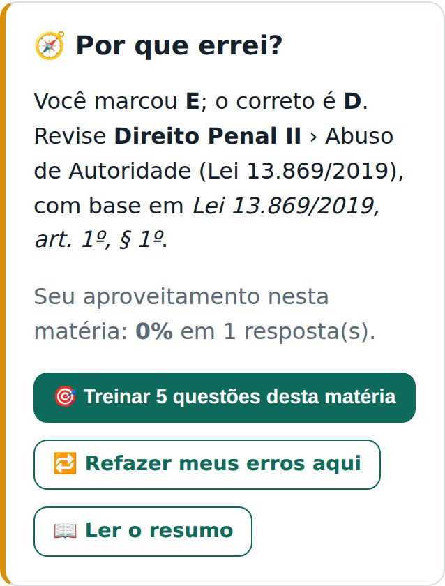
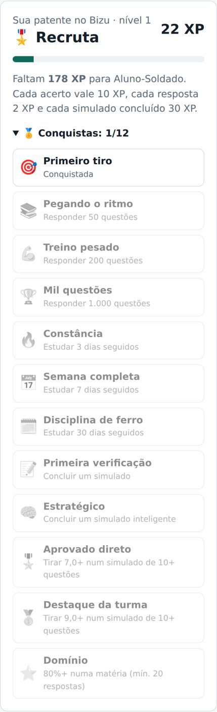
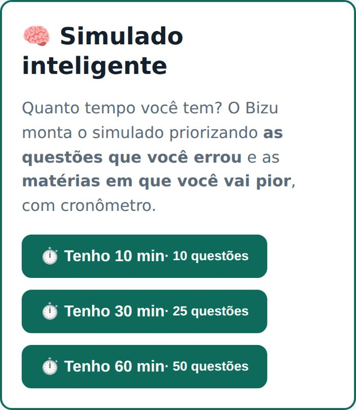
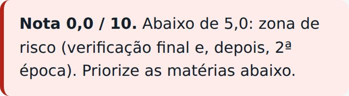
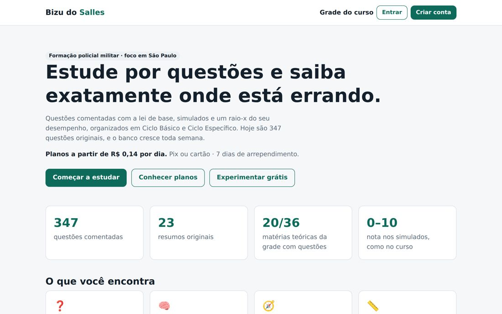
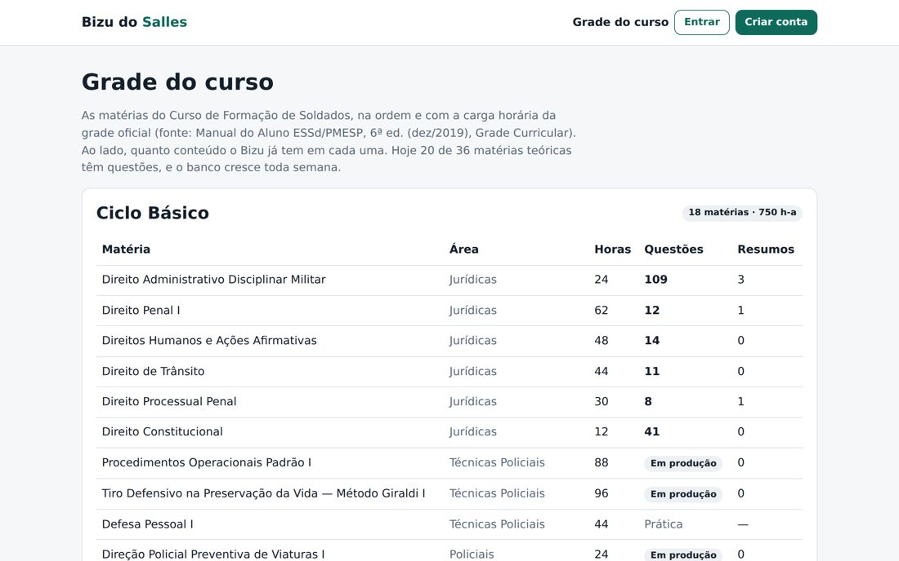

Versão 0.14.0 · outubro de 2026 · valores pesquisados em 07/10/2026 (confira antes de decidir; taxas e câmbio mudam).
| Novidade | Para que serve |
|---|---|
| 🧭 Por que errei? | Depois de cada erro: o que revisar, o aproveitamento na matéria, botão "Treinar 5 questões desta matéria", "Refazer meus erros" e link para o resumo. |
| 🧠 Simulado inteligente | "Tenho 10, 30 ou 60 min": monta o simulado priorizando questões erradas e matérias fracas, com cronômetro. |
| 📏 Nota de 0 a 10 | O resultado mostra a nota e o que ela significaria no curso (7,0 = sem verificação final; abaixo de 5,0 = risco de 2ª época). |
| 🎖️ Patentes, XP e 12 conquistas | De Recruta a Coronel. Motiva o aluno a voltar todo dia (mais uso = mais renovação e indicação). |
| 📚 Página /grade (pública) | Mostra as 40 matérias oficiais, horas, quantas questões e resumos existem em cada uma. Ajuda no Google e na confiança. |
| 💰 Página inicial que vende | "A partir de R$ 0,14 por dia", números do banco, como funciona, destaque do plano Completo, perguntas frequentes e aviso de site independente. |
| 🔎 SEO | sitemap.xml, robots com sitemap e perguntas frequentes marcadas para o Google. |
| 📱 Celular | Números do painel, resultado e desempenho em 2 colunas; topo das páginas públicas com Grade/Entrar/Criar conta. |






Dólar ≈ R$ 5,21 + IOF de 3,5% no cartão ≈ R$ 5,40 por US$ 1.
| Item | Testar (agora) | A · Econômico | B · Simples | C · Crescimento |
|---|---|---|---|---|
| Hospedagem do site | Vercel Hobby R$ 0 * | Render Starter US$ 7 ≈ R$ 38 | Vercel Pro US$ 20 ≈ R$ 108 | Vercel Pro ≈ R$ 108 |
| Banco de dados (Neon) | Free R$ 0 | Free R$ 0 | Free R$ 0 | Launch mín. US$ 5 ≈ R$ 27 |
| Domínio .com.br (R$ 40/ano) | — | R$ 3,33 | R$ 3,33 | R$ 3,33 |
| MEI (DAS serviços 2026) | — | R$ 86,05 | R$ 86,05 | R$ 86,05 |
| E-mail (Resend, até 100/dia) | R$ 0 | R$ 0 | R$ 0 | R$ 0 |
| Anúncios (Instagram/Google) | — | — | — | R$ 300 |
| Total por mês | R$ 0 | ≈ R$ 127 | ≈ R$ 197 | ≈ R$ 524 |
Taxas do Mercado Pago para venda online (estimadas; cada conta pode ter taxa diferente — confira no painel): Pix ≈ 0,99% · cartão de crédito ≈ 4,98% (recebendo na hora; esperando 14 ou 30 dias a taxa é menor).
| Plano | Preço | Pix: sobra | Cartão: sobra | Por dia para o aluno |
|---|---|---|---|---|
| Ciclo Básico (180 dias) | R$ 29,90 | R$ 29,60 | R$ 28,41 | R$ 0,17 |
| Ciclo Específico (180 dias) | R$ 29,90 | R$ 29,60 | R$ 28,41 | R$ 0,17 |
| Completo (365 dias) | R$ 49,90 | R$ 49,41 | R$ 47,41 | R$ 0,14 |
Venda média (60% Completo, 40% um ciclo; 70% Pix, 30% cartão): preço médio R$ 41,90 → sobra ≈ R$ 40,98 por venda.
| Cenário de custos | Custo/mês | Vendas/mês para empatar |
|---|---|---|
| A · Econômico (Render) | R$ 127 | 4 |
| B · Simples (Vercel Pro) | R$ 197 | 5 |
| C · Crescimento (com anúncios) | R$ 524 | 13 |
Público direto: alunos do CFSd. O concurso de 2026 teve 2.000 vagas por edital (4.000 autorizadas em 2 editais) e 57.967 inscritos (26 por vaga). Cálculo com cerca de 4.000 alunos por ano.
| Cenário | Compram | Vendas/ano | Sobra das vendas | Custos/ano | Lucro/ano |
|---|---|---|---|---|---|
| Conservador (custos A) | 2% | 80 | R$ 3.278 | R$ 1.529 | ≈ R$ 1.750 |
| Moderado (custos B) | 5% | 200 | R$ 8.196 | R$ 2.369 | ≈ R$ 5.830 |
| Otimista (custos C) | 10% | 400 | R$ 16.392 | R$ 6.293 | ≈ R$ 10.100 |
Antes do imposto de renda pessoal. As vendas se concentram no início de cada ciclo do curso (a cada ~6 meses). Limite do MEI: R$ 81 mil/ano (confira se mudou).
| # | Ideia | Por que funciona | Esforço |
|---|---|---|---|
| 1 | Completar as 16 matérias "Em produção" (POP I/II, Tiro, Legislação PM, Escrituração…) | POP e Tiro somam 368 h do curso. Quem vê matéria vazia na /grade não compra. | Médio (preciso das apostilas) |
| 2 | Divulgar nas turmas: Instagram/TikTok com "bizu do dia", grupos de WhatsApp das turmas | Custo zero; aluno indica aluno no mesmo pelotão. | Baixo |
| 3 | Cupom de turma / indicação (o painel já tem cupons) | Ex.: "PELOTAO10" com 10% para grupos. | Baixo |
| 4 | Lembrete de renovação por e-mail antes do acesso vencer | Quem fez o 1º ciclo compra o 2º. | Baixo (eu programo) |
| 5 | Áudio-resumos (o site já aceita áudio) | Estudar no ônibus/alojamento; justifica o Completo. | Médio |
| 6 | Produto para o concurso ("Bizu do Concurso PM SP", prova Vunesp) | ~58 mil inscritos: 14 vezes o público do curso. 1% a R$ 29,90 ≈ R$ 17 mil. | Alto (conteúdo novo) |
| 7 | Outros cursos: Sargentos (CFS), Bombeiros, outros estados | O sistema já separa por estado e ciclo. | Alto |
| Área | O que fazer |
|---|---|
| Conteúdo | 238 questões estão com confiança MÉDIA: conferir com o texto oficial da lei (preciso liberar planalto.gov.br e al.sp.gov.br na internet do ambiente). Provas antigas do curso ajudam a acertar o estilo. |
| Legal | Abrir MEI; Termos e Privacidade (LGPD) revisados por advogado; MEI só precisa emitir nota para empresa (para pessoa física é opcional). |
| Técnico | Backup semanal (scripts/backup.sh); avisos de site fora do ar (UptimeRobot, grátis); trocar a senha do banco que apareceu em print. |
Cadastrar o site no Google Search Console e enviar /sitemap.xml. | |
| Confiança | Preencher WhatsApp e e-mail de suporte no painel; pedir depoimentos reais dos primeiros alunos (nunca inventar). |
| Quando | O que |
|---|---|
| Próximos 30 dias | Publicar (Vercel grátis para testar) · Mercado Pago em modo teste · conseguir apostilas de POP e Tiro · 10 amigos testando grátis |
| 60 dias | Abrir MEI · domínio · passar para Vercel Pro ou Render · ligar o pagamento real · Instagram com bizu do dia |
| 90 dias | Meta: 5 vendas/mês (empate) · completar POP/Tiro/Legislação · lembrete de renovação · decidir se começa o produto do concurso |
Vercel (uso comercial e Pro US$ 20): makerkit.dev/blog/saas/vercel-cost · Neon: neon.com/pricing · Render/Railway: agentdeals.dev/railway-vs-render · Resend: resend.com/blog/new-free-tier · Mercado Pago (Pix online 0,99%): nuvemshop.com.br/blog/pix-pessoa-juridica · cartão 4,98%: seucreditodigital.com.br · DAS MEI 2026: infinitepay.io/blog/valor-das-mei-2026 · Domínio: registro.br · IOF 3,5%: meutudo.com.br/blog/iof-no-cartao-de-credito · Concurso PM SP 2026 (vagas e 57.967 inscritos): novaconcursos.com.br e noticias.focusconcursos.com.br · Dólar (PTAX 28/09/2026 R$ 5,21): renovainvest.com.br/dolar-hoje.